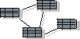

Artifact
Overview:
Data Model

CRS Artifact:
Data Model
|
The Course Registration System accesses two
different databases, an object-oriented database and a (legacy)
relational database. The actual database schemas are defined in the db
tools used, not accessible through this project web. The mechanisms for accessing the databases are
described in the design
model in Rational Rose (see reports section). To learn more about this artifact, see
RUP:
Data
Model.
|
| Tool: |
Rational® Rose™,
ObjectStore® and Orlace® |
| Template: |
None |
| Specialization: |
None |
|
Related artifacts:
|
Reports:
- Design
Model Report (Rational Rose Web Publisher Add-in)
- OODB access, see the following packages in the
Design Model
- Business Services / ObjectStore Support
- Business Services / Middleware /
Com.odi
- Architectural Mechanisms /
Persistency / OODBMS - ObjectStore
- RDB access, see the following packages in
the Design Model
- Business Services / Course Catalog
System
- Architectural Mechanisms /
Persistency / RDBMS - JDBC
|
Some of the elements in the Rational Rose model file is linked to documents
outside the model. For these links to work, you must set up a virtual path
symbol to point to the home directory of the model file. Follow these steps :
- Open Rational Rose, Select File / Edit Path Map
- In the 'Symbol' field, type 'CRS_HOME' (all upper case)
- In the 'Actual Path' field, type '&' (sets all linked files to be
addressed relative to home directory of the model file).
- Click Add and Close
- Open the Course Registration System model file
|